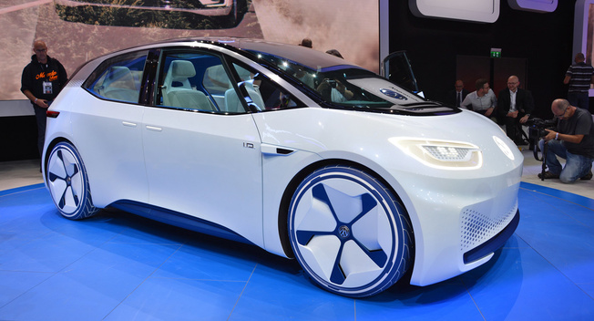

Volkswagen was originally created in 1936 by the German Labour Front (Deutsche Arbeitsfront).[5] In the early 1930s, the German auto industry was still largely composed of luxury models, and the average German could rarely afford anything more than a motorcycle. As a result, only one German out of 50 owned a car. Seeking a potential new market, some car makers began independent "peoples' car" projects – the Mercedes 170H, Adler AutoBahn, Steyr 55, and Hanomag 1.3L, among others.
Volkswagen was originally created in 1936 by the German Labour Front (Deutsche Arbeitsfront).[5] In the early 1930s, the German auto industry was still largely composed of luxury models, and the average German could rarely afford anything more than a motorcycle. As a result, only one German out of 50 owned a car. Seeking a potential new market, some car makers began independent "peoples' car" projects – the Mercedes 170H, Adler AutoBahn, Steyr 55, and Hanomag 1.3L, among others.
Upcoming cars:
Volkswagen I.D-Electric Car
Volkswagen did indeed debut its first dedicated electric car at the Paris Motor Show, as heavily teased. The I.D. revealed at the show is still labeled a “concept,” but VW says it’s due to become a buyable car in 2020, with a total range of ups to 373 miles per charge, driven by a 168hp electric motor.
The concept design for the I.D., which will be Volkswagen’s first purely electric design (as opposed to vehicles like the e-Golf which also offer a gas-powered option) also includes some even more future-focused features, including “I.D. Pilot mode,” a fully autonomous driving feature. The carmaker says its self-driving tech will be ready for production vehicles beginning in 2025, if things go as planned. In the same year, Volkswagen intends to cross the million electric cars sold mark, the company noted in a press release.